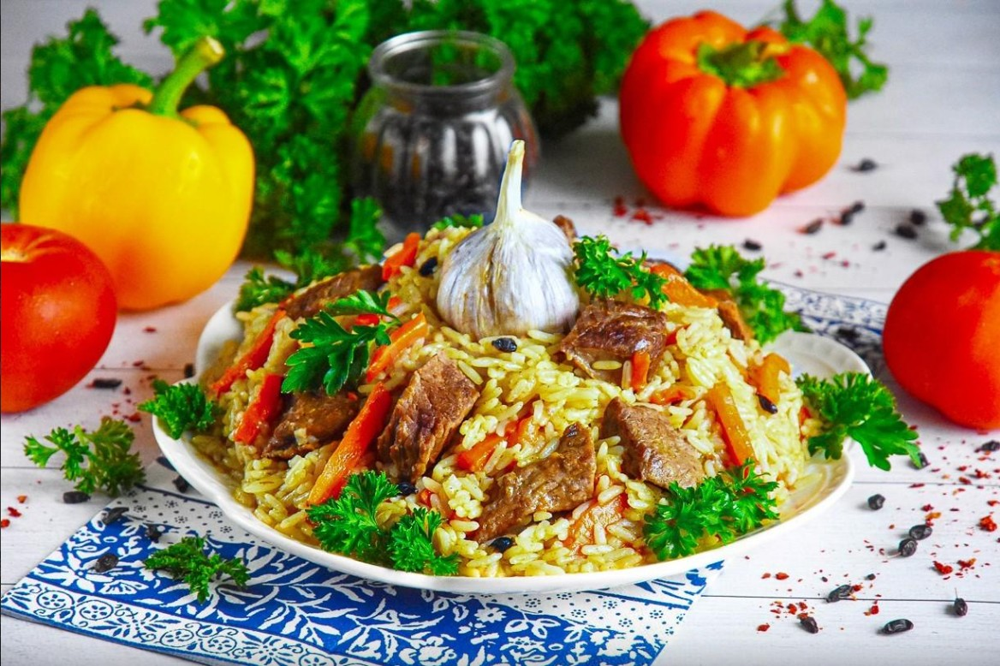

| Название блюда | Оценка | Ссылка на рецепт | Фото блюда |
|---|---|---|---|
| Плов | 8/10 | Рецепт плова |  |
| Паста Карбонара | 9/10 | Рецепт пасты Карбонара | |
| Вареники с вишней | 9/10 | Рецепт вареников с вишней | |
| Свиные рёбрышки | 10/10 | Рецепт рёбрышек | |
| Печеночный торт | 7/10 | Рецепт печёночного тортика | |